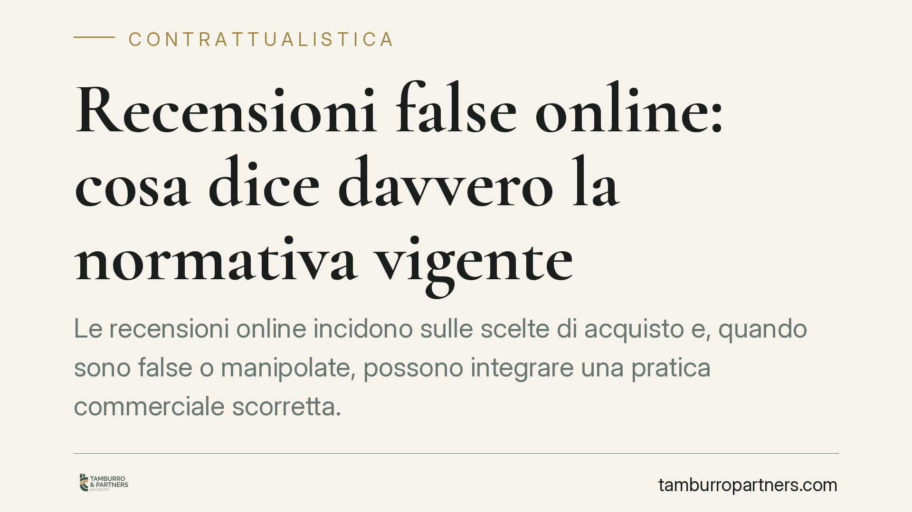

Recensioni false online: cosa dice davvero la normativa vigente
Le recensioni online incidono sulle scelte di acquisto e, quando sono false o manipolate, possono integrare una pratica commerciale scorretta. La disciplina non nasce da una norma nuova: si fonda sul Codice del consumo, come modificato dalla Direttiva Omnibus, e sul Regolamento europeo DSA. Vediamo cosa prevede oggi il quadro vigente e quali adempimenti riguardano piattaforme, esercenti e consumatori.

Inquadramento normativo
Il tema delle recensioni online è già regolato dal diritto vigente, senza bisogno di invocare provvedimenti recenti non verificabili.
Il riferimento centrale è il Codice del consumo (D.lgs. 206/2005). Gli artt. 20-23 qualificano come pratiche commerciali scorrette le condotte ingannevoli o aggressive dei professionisti. Pubblicare o commissionare recensioni false, oppure presentare come genuine recensioni che non lo sono, rientra in questo perimetro.
A ciò si aggiunge l'art. 22-bis del Codice del consumo, introdotto dal D.lgs. 26/2023 (attuazione della Direttiva UE 2019/2161, cosiddetta Omnibus). La norma impone a chi dà accesso a recensioni dei consumatori di indicare se e come verifica che provengano da soggetti che hanno effettivamente utilizzato o acquistato il prodotto. Non è obbligatorio verificare, ma è obbligatorio dichiarare con chiarezza cosa si fa e cosa non si fa. L'omissione o la dichiarazione falsa costituisce pratica ingannevole.
Sul piano europeo rileva il Regolamento UE 2022/2065 (Digital Services Act – DSA). Il DSA impone alle piattaforme meccanismi di notice and action: canali per segnalare contenuti illeciti e l'obbligo di agire senza indebito ritardo una volta ricevuta una notifica qualificata. Le recensioni manifestamente false possono rientrare tra i contenuti da rimuovere o disabilitare secondo queste procedure.
L'AGCM (Autorità Garante della Concorrenza e del Mercato) è l'autorità competente a sanzionare le pratiche commerciali scorrette ai sensi del Codice del consumo e può intervenire con diffide, provvedimenti inibitori e sanzioni pecuniarie.
Implicazioni pratiche
Il quadro ha effetti differenziati sui tre soggetti coinvolti.
Per le piattaforme online. Chi ospita recensioni deve predisporre procedure di segnalazione accessibili e trattare le notifiche con tempestività. Deve inoltre esplicitare la propria politica di verifica dell'autenticità, come richiesto dall'art. 22-bis. L'inerzia di fronte a recensioni manifestamente false espone a responsabilità.
Per gli esercenti (ristoranti, hotel e altre attività). Commissionare, acquistare o incentivare recensioni non genuine è una pratica scorretta sanzionabile. Lo è anche pubblicare recensioni false in danno dei concorrenti. Attenzione: una critica negativa autentica e legittima non è una recensione falsa. Il consumatore ha diritto di esprimere un giudizio sfavorevole, purché veritiero e non diffamatorio. Confondere i due piani e chiedere rimozioni indebite espone a loro volta a contestazioni.
Per i consumatori. Resta pieno il diritto di recensire e di criticare, nel rispetto dei limiti della verità e della continenza. La tutela contro le recensioni manipolate rafforza l'affidabilità delle informazioni su cui si basano le scelte di acquisto.
La distinzione che conta
Il discrimine operativo è tra la recensione evidentemente falsa – riconducibile a chi non ha mai avuto rapporti con l'attività, seriale, incoerente o parte di campagne coordinate – e la critica negativa autentica, che resta legittima anche se sgradita. Solo la prima categoria giustifica una richiesta di rimozione fondata. La seconda non si contrasta con la censura, ma eventualmente con una risposta pubblica misurata.
Cosa fare in concreto
- Verificate le vostre policy sulle recensioni. Se gestite o esponete recensioni, indicate in modo chiaro se e come ne controllate l'autenticità, come richiede l'art. 22-bis Cod. consumo.
- Non commissionate né incentivate recensioni non genuine. Escludete pratiche di acquisto recensioni, scambi o pressioni sui clienti: integrano pratica commerciale scorretta sanzionabile dall'AGCM.
- Attivate i canali di segnalazione. Di fronte a recensioni manifestamente false, utilizzate i meccanismi di notice and action della piattaforma e documentate la richiesta.
- Distinguete la critica legittima. Prima di chiedere una rimozione, valutate se si tratti di recensione falsa o di giudizio negativo autentico: le richieste infondate possono ritorcersi contro chi le avanza.
- Documentate tutto. Conservate segnalazioni, risposte delle piattaforme e tempi di intervento: sono elementi utili in caso di contenzioso o di istruttoria dell'Autorità.
Su questi temi è opportuna una verifica delle procedure interne e della modulistica contrattuale con fornitori e piattaforme, così da allineare le prassi aziendali agli obblighi di trasparenza vigenti.
---
*Contributo informativo a cura di Tamburro & Partners - Avv. Giuseppe Tamburro. Non costituisce parere legale.*
Ogni contratto ha il suo equilibrio.
Se vuoi una revisione delle clausole o una redazione su misura, scrivi allo studio. Ti rispondiamo entro un giorno lavorativo.